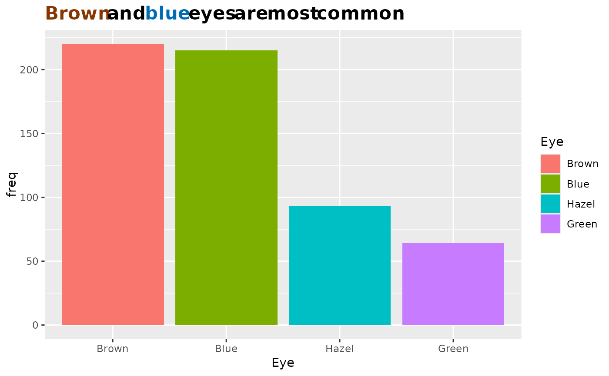

This function allows you to selectively color words in the text of your ggplot2 plot. In order for this to work, you'll need to use the gg_text::element_markdown() in the ggplot2::theme for the text you want to color.
Arguments
- title_text
This is a string that is the entire title (or subtitle or caption)
- highlight_words
This is a vector of the words you want to highlight from the
title_textstring. This vector must be the same length as thehighlight_colorsvector- highlight_colors
This is a vector of the colors you want for each word in the
highlight_wordsargument. The first color corresponds to the first word, the second color with the second word, etc. This vector must be the same length as thehighlight_wordsvector
Value
a string that can be used for a ggtext::element_markdown() title
Examples
title <- gg_color_title("Brown and blue eyes are most common",
c("Brown", "blue"), c("#873600", "#006cb6"))
HairEyeColor %>%
data.frame() %>%
dplyr::group_by(Eye) %>%
dplyr:: summarize(freq = sum(Freq),
.groups = "keep") %>%
dplyr:: ungroup() %>%
ggplot2::ggplot(ggplot2::aes(x = Eye,
y = freq,
fill = Eye)) +
ggplot2::geom_bar(position = "dodge",
stat = "identity") +
ggplot2::labs(title = title) +
ggplot2::theme(plot.title = ggtext::element_markdown(size = 16, hjust = 0, face = "bold"))
